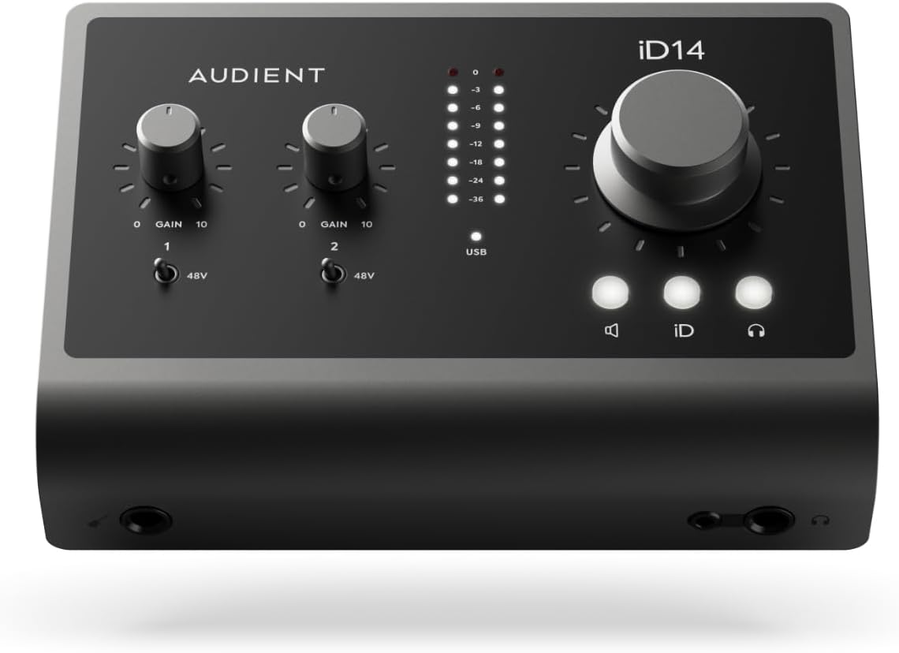
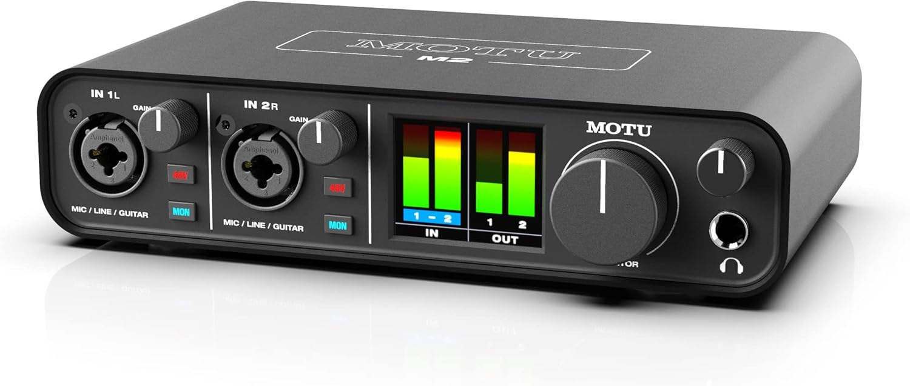
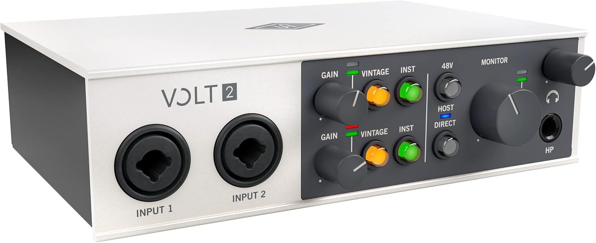

Mejor Interfaz de Audio para Grabación Casera (2026)

He grabado a través de más interfaces de las que puedo contar — desde cajas USB económicas hasta equipos profesionales en Abbey Road. La interfaz es la pieza de equipo que toca cada una de tus grabaciones, así que importa. Aquí están las cuatro interfaces en las que más confío, en cada nivel de precio.
Mejor Económica: Focusrite Scarlett 2i2 (4ª Gen)
La Scarlett 2i2 es la campeona del pueblo. La 4ª Generación trae 120dB de rango dinámico, modo Air (que añade un realce de altas frecuencias inspirado en las consolas Neve vintage) y loopback para streaming. He grabado demos completas con esto y los resultados son genuinamente impresionantes. Por $199, nada más se le acerca.
Focusrite Scarlett 2i2 4ª Gen
$199 USD
La interfaz de audio más vendida del mundo acaba de mejorar. 120dB de rango dinámico, modo Air y Loopback para streaming. Conversión de grado estudio.
Mejor Carácter: SSL 2+
SSL se hizo un nombre con los mejores preamplificadores de consola del mundo. La SSL 2+ te da ese mismo channel strip 4K Legacy — un ecualizador analógico conmutable que añade presencia y pegada. La usé en una sesión reciente y las voces se asentaron en la mezcla sin esfuerzo. El micrófono talkback incorporado es un extra para dirigir sesiones.

SSL 2+
$299 USD
Solid State Logic en una interfaz. Legendarios preamplificadores SSL 4K, channel strip analógico Legacy 4K y funciones profesionales de monitoreo.
Mejor Prosumer: Universal Audio Apollo Twin X
La Apollo Twin X te da procesamiento UAD DSP en tiempo real — puedes grabar a través de compresores, EQs y reverb con latencia casi nula. Los preamplificadores Unison realmente cambian su impedancia para igualar hardware legendario. Es cara pero es nivel profesional. Si te tomas en serio la calidad de grabación, esta es la decisión.

Universal Audio Apollo Twin X
$899 USD
Interfaz Thunderbolt de grado profesional con procesamiento UAD DSP. Plugins UAD en tiempo real con latencia casi nula. Preamplificadores Unison.
Mejor Portátil: RME Babyface Pro FS
RME es legendaria por sus drivers sólidos como una roca y su conversión impecable. La Babyface Pro FS cabe en una mochila pero ofrece sonido de grado estudio. La he llevado de gira y la he usado en habitaciones de hotel para sesiones de escritura. La supresión de jitter SteadyClock FS es la salsa secreta — tus grabaciones sonarán más limpias que con interfaces del doble de precio.

RME Babyface Pro FS
$949 USD
El estándar de oro para grabación portátil. Legendarios drivers RME, supresión de jitter SteadyClock FS y conversión AD/DA impecable.
El Sonido de Consola: Audient iD14 MkII
Audient fabrica consolas de grabación de $50,000 utilizadas en estudios profesionales de todo el mundo. El iD14 MkII pone esos mismos previos de micrófono Clase A en una interfaz de escritorio compacta. La entrada DI JFET le da a tu guitarra o bajo el calor de un amplificador a válvulas antes incluso de llegar a tu DAW. Las salidas de auriculares duales con control de nivel independiente lo hacen ideal para grabar dúos o enseñar. A $299, obtienes audio de grado consola en un paquete portátil.

Audient iD14 MkII
$299 USD
Preamplificadores de grado consola en una interfaz compacta. Los mismos previos de micrófono Clase A que se encuentran en la consola ASP8024 de $50,000 de Audient. Salidas de auriculares duales y entrada DI JFET para instrumentos.
Mejor Valor: MOTU M2
El MOTU M2 incluye características que esperarías al doble del precio. La pantalla LCD a todo color muestra niveles de entrada y salida en tiempo real — se acabó adivinar tu ganancia. El DAC ESS Sabre32 Ultra ofrece la misma calidad de conversión que se encuentra en interfaces de más de $500. Loopback lo hace perfecto para streamers y podcasters que necesitan enrutar audio del ordenador. A $199, nada más en este rango de precio ofrece esta combinación de medición, conversión y calidad de construcción.

MOTU M2
$199 USD
El mejor valor en su clase. Medición LCD a todo color, DAC ESS Sabre32 Ultra y loopback para streaming. La única interfaz por menos de $200 con monitoreo de nivel en tiempo real.
UA Económico: Universal Audio Volt 2
Universal Audio se hizo un nombre con interfaces DSP de alta gama. El Volt 2 trae calidad UA a un precio de entrada sin comprometer características. El modo Vintage Mic Preamp cambia físicamente el circuito para emular el clásico previo de tubo UA 610 — no es un plugin, es coloración analógica real. MIDI I/O, construcción metálica sólida y un distintivo diseño retro que se ve tan bien como suena. A $189, es la interfaz con más carácter en la categoría económica.

Universal Audio Volt 2
$189 USD
Calidad UA a precio de entrada. El modo Vintage Mic Preamp emula el clásico previo de tubo UA 610. MIDI I/O y construcción sólida con diseño retro que destaca.
Veredicto:
Scarlett 2i2 para presupuesto, Apollo Twin X para profesional
Conclusión
Compra la Scarlett 2i2 si estás empezando. Consigue la SSL 2+ si quieres carácter. Invierte en la Apollo Twin X si estás listo para ir a nivel profesional. Y si la portabilidad es tu prioridad, la Babyface Pro FS es inmejorable. No puedes equivocarte con ninguna de estas — las he usado todas profesionalmente.